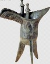

（88）三杯美酒敬梅花
|
中国語風に発音するとサンペイメイチュー チンメイホワ、ってなんだか舌を咬みそう....（^-^；
   
麻将学って中国の本に載っている。 で三杯の美酒、 で三杯の美酒、 で梅の花を表していると思われ。 で梅の花を表していると思われ。 は牌種不問で、とにかく九であればいいらしい。しかし九という数字が何を表しているのか分からない(>_<) 誰か知っている人、教えてちゃぶだい。 は牌種不問で、とにかく九であればいいらしい。しかし九という数字が何を表しているのか分からない(>_<) 誰か知っている人、教えてちゃぶだい。
|
まｋ 投稿日：2009/05/03(Sun)
「酒」は「九」と発音が同じなのでそれにかけているのだと思います。
|
我打麻将 投稿日：2009/05/03(Sun)
どちらも jiu の3声ですね。
|
あさみ 投稿日：2009/05/04(Mon)
そうかっ！、 と九で三杯の美酒を表すわけか。いや、牌種ではなく発音がポイントとは気が付かなかった（^-^；
お陰で長年の疑問が解けました。 まｋ さん、ＷＭさん、どうもありがとう(^-^)/
|
我打麻将 投稿日：2009/05/06(Wed)
しかし が なぜ酒を意味するのかがわからないんですが…
|
熱血の志豊 投稿日：2009/05/06(Wed)
こんにちは、ＷＭさん＾＾
中は「杯中酒」の意味です。
|
overnitary 投稿日：2009/05/06(Wed)
こんにちは、熱血の志豊さん
わたしの考えでは、 は杯の象形かも知れません。

で杯、九で酒、 で梅花、ということです
|
熱血の志豊 投稿日：2009/05/06(Wed)
こんにちは、overnitaryさん＾＾
私は台湾人です。
「酒」は誤字です。
確かに「中」は「杯(さかずき）」の意味です＾＾
|
あさみ 投稿日：2009/05/06(Wed)
ども、熱血の志豊 さん、overnitaryさん
なるほろ、たしかに の形は杯に似ていますね。
つまり の刻子で３つの杯、九で それぞれに つがれた酒を表すわけですか。(゜０゜)
いや、中国語はじつにファンタスティック(^-^)/
|
まｋ 投稿日：2009/05/10(Sun)
画像を拝見しましたが牌の並びは字牌を右に寄せて表記するのが通常なのではないかと思います。ところがこの並びは左から、、数牌九の面子となっていますので、おそらくこの役を紹介した著者（役の開発者？）の意図としては、三杯＝３つの、美（梅と同音、 は後ろの梅花にもかかる）＝、酒＝数牌の九であることを示したかったのではないかと思います。
|
あさみ 投稿日：2009/05/10(Sun)
な〜るほど、美（メイ）が梅（メイ）にもかかっているとすればホントにすごいですね。(^-^)/
いちおう原本で並びをたしかめてみようと思ったのですが、本がどっかに入りこんでしまって見あたらない。(>_<)
そこで原本の表示もこういう並びになっていたのか、現時点ではワカリマセン(_ _；
|